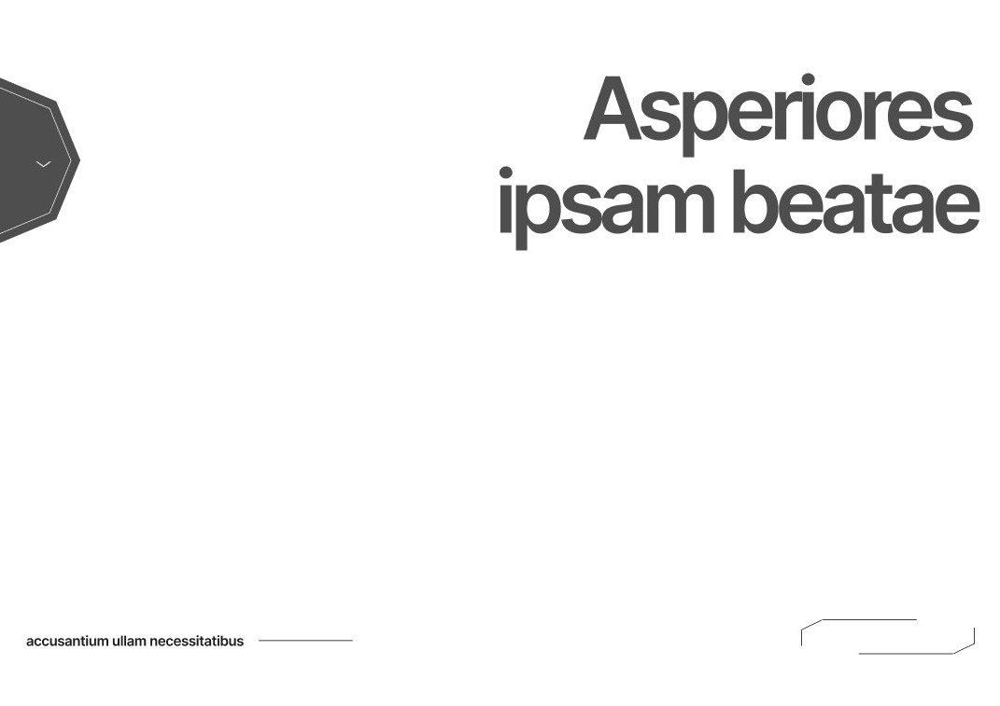
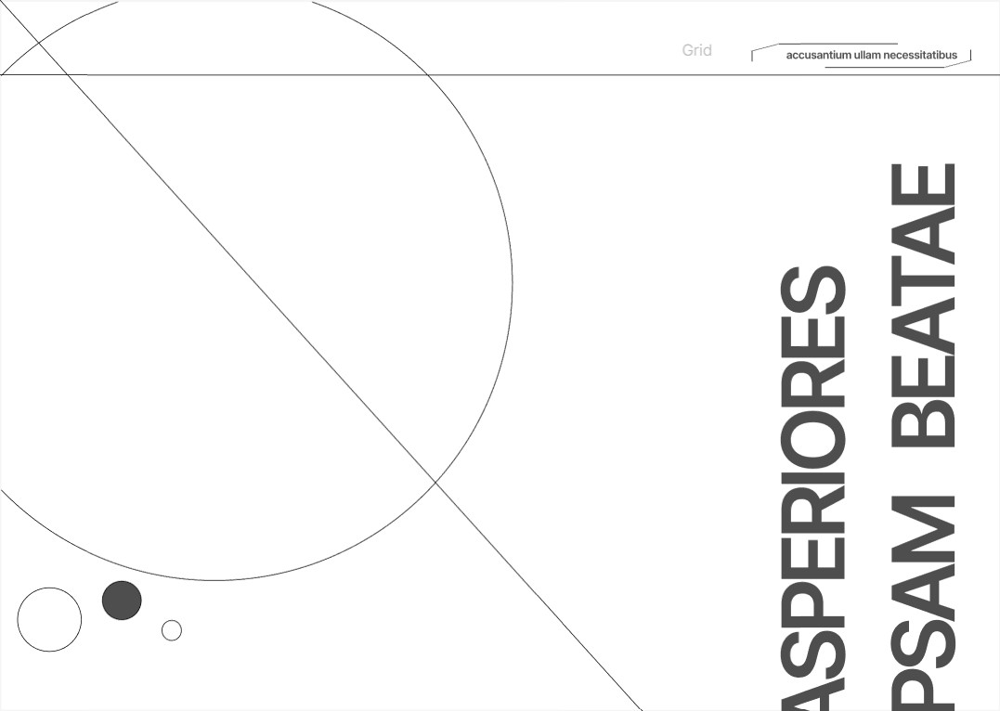
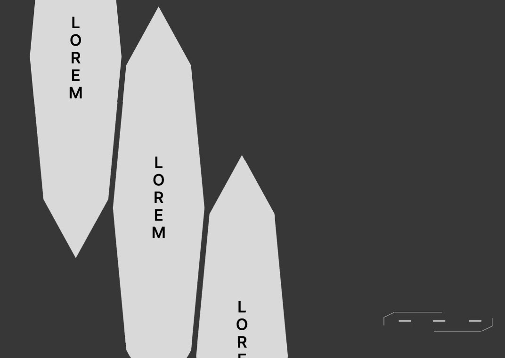
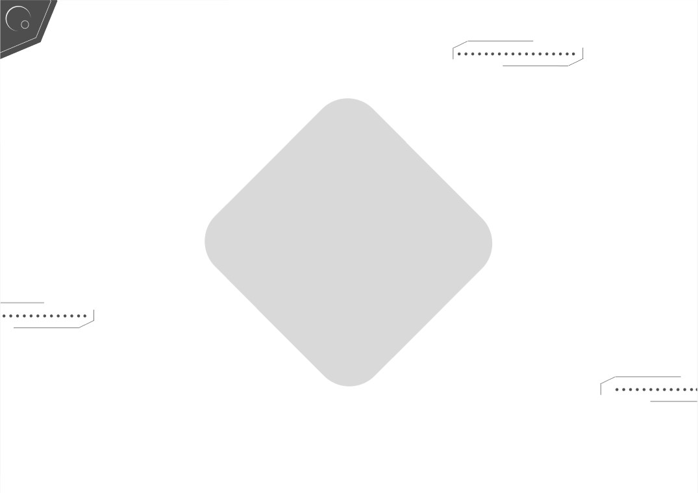
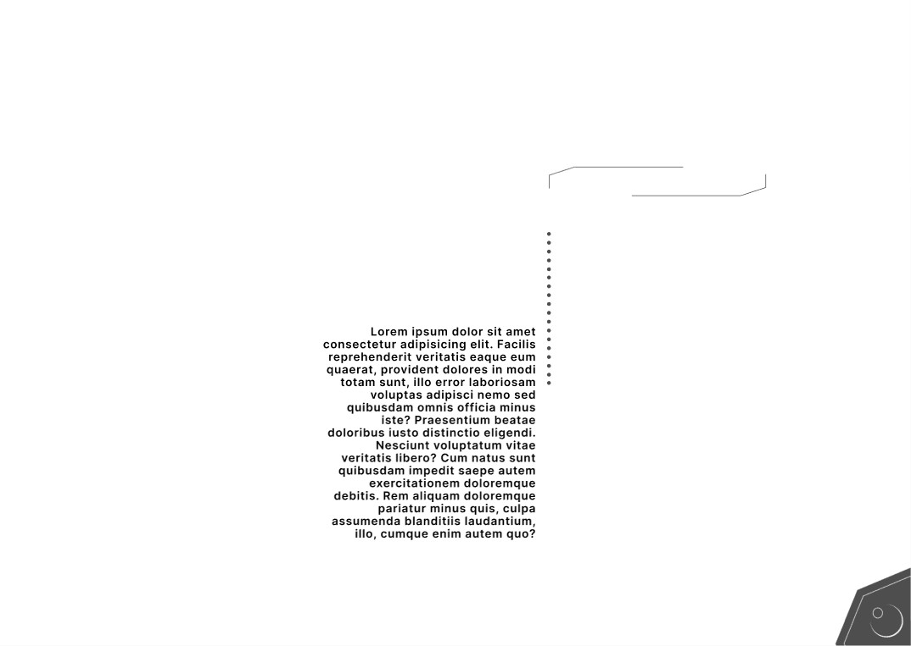
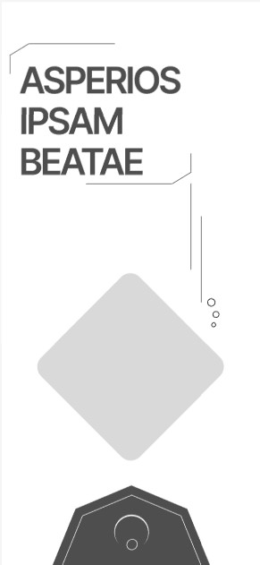
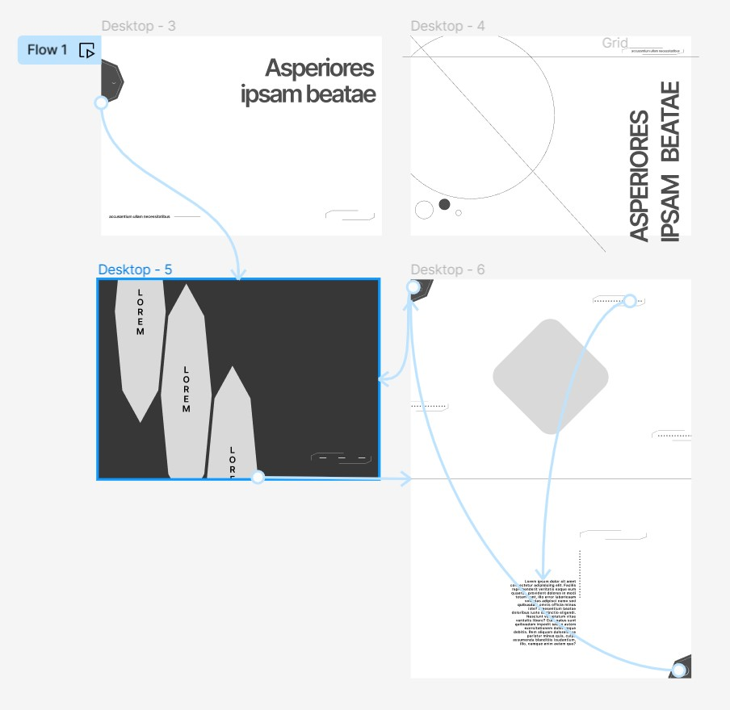

A simpler overall UI design, the shape on the left would be unravelling into an animated vertical navigation menu

Alternative initial screen, the diagonal line would rotate upwards as the user scrolls, the filled circle when clicked would expand to cover the screen and show a navigation menu

Possible navigation menu, each of the crystal shapes would be clickable to open a new page, they would flow out the top and bottom when clicked

Follow-up menu screen, top left icon would return to the navigation menu, the diamond is a visual placeholder, each of the surrounding boxes would be clickable by the user

Once a box surrounding a visual is clicked, this would be the follow-up screen, also with a return button in the opposite corner

Mobile format example, the diamond is a visual placeholder which would be clickable to go directly to that page, the shape at the bottom would be clickable once again to open the navigation menu

Example wireframe of the flow between frames